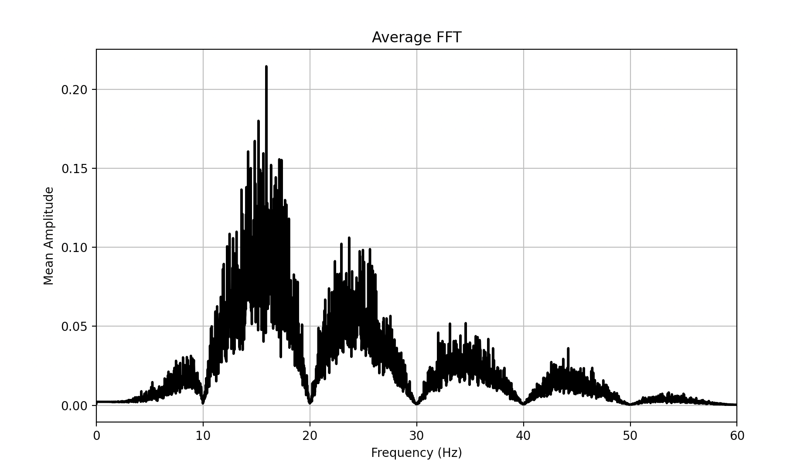
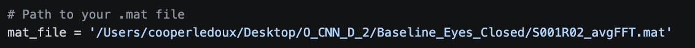

Loads a single precomputed average FFT .mat file and plots the mean spectral amplitude from 0–60 Hz as a quick visual inspection of the frequency domain features used in Script 04.
Before feeding precomputed FFT features into the CNN, it is worth loading one and confirming it looks correct. This script is a one shot visual check: load a single .mat file exported by MATLAB Script 08, extract the avg_fft_row and frequency axis, and plot the spectral curve from 0 to 60 Hz. A healthy eyes closed baseline should show a clear alpha peak around 10 Hz; a flat or noisy plot indicates something went wrong in the MATLAB export pipeline.
No BioSig or MATLAB setup needed, this is pure Python with scipy and matplotlib. Like Script 04, this reads a precomputed .mat feature file from the EEG_CNN_Features_AvgFFT dataset rather than .edf or .set files directly, so there is no baseline versus segment concern here either, both are present among the .mat files.
The mat_file path at the top of the script is hardcoded to one specific file on one specific machine. Update it to point at whichever .mat file you want to inspect.
mat_contents = scipy.io.loadmat(mat_file)
avg_fft = mat_contents['avg_fft_row'].flatten()
frequencies = mat_contents['f'].flatten()
plt.plot(frequencies, avg_fft, 'k-', linewidth=2)
plt.xlabel('Frequency (Hz)')
plt.ylabel('Mean Amplitude')
plt.xlim([0, 60])
plt.grid(True)The avg_fft_row key name is the contract between this Python script and the MATLAB export in Script 08. If the MATLAB side changes the variable name, this script will raise a KeyError immediately rather than silently producing garbage, which makes debugging easier.
The 60 Hz upper limit on the x axis is deliberate: EEG features relevant to motor imagery live below 40 Hz (delta, theta, alpha, beta, low gamma), and above 60 Hz the signal is increasingly dominated by muscle artifact and line noise. Cutting the plot at 60 Hz focuses attention on the meaningful part of the spectrum.
This script sits at the bridge between the MATLAB preprocessing pipeline and the Python CNN. Running it on a few files from each class before starting training is a fast sanity check that the feature extraction worked correctly end to end. The per class shape differences visible here are exactly what the CNN in Script 04 is learning to separate.

